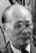

| 148,107,60,25 光 |
光美 名元士 Göng Mî [Ngũn Xù] Guāngměi (Yuánshì) |
||||||
|---|---|---|---|---|---|---|---|
| 149,108,61,26 前 |
榮? Róng ? |
榮澤 Róngzé |
榮廣 Róngguǎng |
榮汗 Rónghàn |

榮祿(樾雲) = (1) ? (2) 美瓊 Vẽin Lùk (Yòt Vũn) = (1) ? (2) Mî Kěin Rónglù = (1) ? (2) Měiqióng |
||
| 150,109,62,27 遠 |
迺文 Näi Mũn Nǎiwén |
迺術 Näi Sùt Nǎishù |
迺任 Näi Ngìm Nǎirèn |
||||
樾雲 Yòt Vũn (Yuèyún) was the pen name of 榮祿 Vẽin Lùk (Rónglù). His three sons were from his first wife. He and his second wife,美瓊 Mî Kěin (Měiqióng), did not have any children.
Eric Chin's Chinese name is 陳力涛, son of 陳乃实, grandson of 陳榮祿, and great grandson of 陳光美. Eric lives in Arcadia, California.